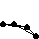
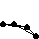

|
001-020
|
|
021-040
|
|
041-060
|
|
061-080
|
|
081-100
|
| 101 |
 |
name: QuadriHelix_MonoStyle
genre: other/flex
comments: This is my tribute to mono's triplehelix, one of my all-time favorites. It took me a while to grasp the programming and once I did I had an even greater appreciation of how brilliant it is. In fact I think his three-sided version looks a little better than my four-sided one. |
| 102 |
 |
name: The_Making_of_Hyperion
genre: other/flex
comments: This is one of the few models I know of its kind allowed in the zoo. I took extra time with it to make sure that it offered more content than the original because I thought people would really be interested in seeing it. |
| 103 |
 |
name: Hyperion
genre: other/flex
comments: To make Hyperion I had to branch out from the knowledge I gained while working on QuadriHelix_MonoStyle significantly. From the beginning I knew it would be a great looking model so I gave it a name I had been saving for a while. It is the name of the titan who fathered Helios. |
| 104 |
 |
name: Saunter
genre: walker
comments: As usual, this simple model follows one of my great efforts. I have found this to be a beneficial and rewarding exercise. It also helps prevent burning out. Getting the relative amplitude just right was tricky, but I like how the two masses at the top do not require being connected. |
| 105 |
 |
name: Translation
genre: roller/motored
comments: This model revisits the method of rotary motion I used way back in the obliquely titled Linear_Motor_but_Rotary_Motion. The mechanism is a little jerky but it is an intellectually interesting way of driving the wheels. |
| 106 |
 |
name: Alcibiades
genre: amoeba/flex
comments: This is a structure similar to Kevino's TriangleQ except it uses tension springs instead of regular muscles. The result is a very attractive spiky rolling amoeba. I named it after an Athenian Statesman who led a particularly thorny and tumultuous career. |
| 107 |
 |
name: Flex_Effect
genre: zero-g/flex
comments: I have always like simple zero-g models that do something interesting in their mechanism. This model appears to morph into diamonds and squares from its default circle shape arrangement. I stumbled upon the method while researching methods for my Thales model. |
| 108 |
 |
name: Beacon
genre: zero-g/flex
comments: This is a set of bent flex structures arranged much the way Jeckyll and others arrange linear motors. I thought this model was relatively plain, but Jeckyll saw something special in it and it launched a collaborative effort between us to explore this technology that was quite rewarding. |
| 109 |
 |
name: Amoeba_Walker
genre: walker/motored
comments: Months before this model was made someone challenged the forum to power a walker with an amoeba. No one did it including me until this idea suddenly struck me one day. I whipped it up late at night and was really exited to have solved such a long-standing dilemma. |
| 110 |
 |
name: Elliptical_Amoeba
genre: amoeba/flex
comments: Submitted with Amoeba_Walker this model showcases the technology behind the former. By adding a second set of guts to a normal flex-rimmed amoeba I was able to keep the two center points equidistant at all times. This allows the amoeba to be mounted in a frame to power the legs of a walker. |
| 111 |
 |
name: Three_Nodes
genre: amoeba
comments: This is another version of my new amoeba with three sets of guts inside it. It is quite massive but some people still managed to power walkers with it. |
| 112 |
 |
name: 3pt_FlexMotor
genre: motor
comments: This motor basically produces a linear combination type motor, but it has the appearance of a flex circle. It is constructed a little differently though to make sure that the six mass positions are qui distant from each other. |
| 113 |
 |
name: 4pt_FlexMotor
genre: motor
comments: This is simply a 4pt version of my 3pt flex motor. It was actually a long time before I went back to implement these motors in a model. But I am committed to using any motor that I submit to the zoo in a walker to show people that it is possible. |
| 114 |
 |
name: 5pt_CounterRotor
genre: motor
comments: I'm not certain, but I think this might be the first time someone made a counter rotor greater than 3 or 4 sides. I don't deserve any of the credit however, I just made the next logical progression from an idea that others made. |
| 115 |
 |
name: Gyroscopic_Star
genre: roller/inertial
comments: This was my first inertial model, but it was before we named this type such (unfortunately it's a misnomer for which I am partially responsible). The real leap however was when Roey_Schurr and Lectvay both figured out independently how to power walkers inertially. |
| 116 |
 |
name: Amoeba_Strand_Motors
genre: motor
comments: These were some motors I supplied for my Amoeba Motor Contest thread in the sodaforum. I made sure to construct them (as always) with the highest possible accuracy since many people would rely on them for their models. |
| 117 |
 |
name: Amoeba_Analysis
genre: walker
comments: This model continues my series of Analysis walkers, each of which explores a different motor or locomotion type. It is actually quite similar to Amoeba_Walker but used two of my amoeba strand motors in the frame. |
| 118 |
 |
name: Ground_Clearance
genre: roller/flex
comments: I like making models that use everyday structures in unusual ways. This model has two elliptical amoebas arranged vertically. The ability to create exact tension springs from experimentally measured lengths is what really makes this chassis possible. |
| 119 |
 |
name: Thales
genre: walker
comments: I intended this to be one of my better models. But this design ended up having so many masses high up that it was difficult to tune effectively. I also experimented with different programs for the legs but none of them moved exactly the way I wanted originally. |
| 120 |
 |
name: Dual_Traction
genre: walker
comments: This model takes advantage of the fact that linear motors complete one cycle for every two of most other motors. So the amoebas at the end of each foot spin faster than the legs move. Ultimately. However, it was so complex that I could tune it to move faster without its roller skates. |
|
121-140
|
|
141-160
|
|
161-180
|
|
181-200
|
|
201-220
|
|
221-240
|
|
241-260
|
|
261-280
|
|
281-300
|
|
301-320
|
|
321-340
|


 
